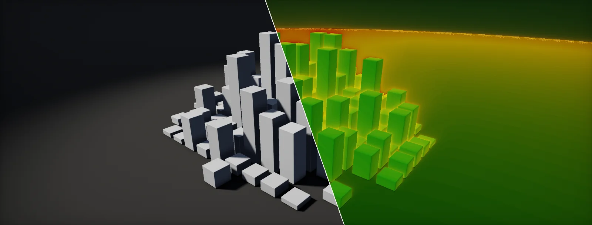

Frame Profiling
A frame is three workers in a relay: the game thread, the render thread and the GPU. The slowest sets your frame rate, and optimizing anything else changes nothing. Every cost model here is a formula you can move.

Frame budget
Performance work is done in milliseconds, not frames per second. Frame rate is one second divided by the frame time, so it does not add up: a feature that costs 2 ms takes 60 fps down to 53, but 30 fps only to 28. Going from 30 to 60 fps halves the budget from 33.3 ms to 16.7 ms; going from 120 to 144 fps only removes 1.4 ms. Milliseconds add, so budgets are written in them:
| Target | Frame budget | Typical platform |
|---|---|---|
| 30 fps | 33.3 ms | Console fidelity modes, mobile |
| 60 fps | 16.7 ms | Console performance modes, PC default |
| 90 fps | 11.1 ms | VR headsets (per eye pair) |
| 120 fps | 8.3 ms | Competitive PC, high-refresh consoles and VR |
A frame is made by three workers. The runs gameplay, physics and animation and decides what to draw. The turns that into commands for the GPU. The GPU executes them (what happens in one frame). They work on different frames at the same time, like a relay where each runner starts the next lap as soon as they hand over: a . So the slowest stage sets the frame time, and the sum is the , how long input takes to reach the screen.
CPU-bound or GPU-bound
Before optimizing anything, find the slow stage. The quickest test is to change the resolution. Work done per pixel shrinks with the square of the resolution scale; everything else stays the same:
Before optimizing anything, find the slow stage. Three tests, from cheapest to most precise:
- Change the resolution. Render at half resolution. If the frame time drops a lot, the GPU is bound by per-pixel work (shading, overdraw, bandwidth). If it does not change, you are CPU-bound or bound by per-vertex GPU work.
- Read the stat line. Every engine shows game, render and GPU times side by side. The largest is the bottleneck.
- Look for waiting. In a CPU profiler, a thread that spends time in a "wait for GPU" or "wait for present" marker is idle because the GPU is behind. A render thread waiting for commands means the game thread is behind.
Once you know the stage, use that stage's tool: a CPU profiler for threads, a GPU capture (RenderDoc, PIX, Nsight, the engine's GPU profiler) for passes and draws.
The Profiler's CPU Usage module shows main and render thread. Gfx.WaitForPresentOnGfxThread on the main thread means it waits for the render thread and GPU; Gfx.WaitForGfxCommandsFromMainThread on the render thread means the main thread is the bottleneck. Enable GPU Usage or use the Rendering Debugger and a RenderDoc capture (Load RenderDoc in the Game view menu) for per-pass GPU timing.
Same markers and Profiler. URP's frame is simpler, so the Frame Debugger is often enough to see every pass and draw. On mobile, use the vendor tools (Arm Performance Studio, Snapdragon Profiler, Xcode GPU capture), because desktop numbers do not transfer.
stat unit shows Frame, Game, Draw (render thread), RHIT and GPU. stat unitgraph plots them over time. ProfileGPU (Ctrl+Shift+,) breaks one frame's GPU time into passes, and Unreal Insights records CPU and GPU timelines together.
Draw calls and state
A asks the GPU to draw one mesh (or part of one) with the current settings: which shader, which textures, which constant buffer values. The draw itself is cheap. What costs CPU time is changing those settings before it: a . That count is the number to watch:
Every batching technique reduces state changes or draws in one of three ways:
- Sort by state. Draw everything that shares a shader and material together, so the state is set once per group.
- Keep material data on the GPU. Upload each material's constants once and only point at them per draw. Unity's does this.
- Instance. Draw many copies of one mesh with one material in a single call, with per-copy data such as transforms in a structured buffer.
Costs use an illustrative model (draw 2 µs, material change 6 µs, shader change 15 µs, 1 µs per material change with persistent material data). Real numbers depend on the engine, API and CPU; the ratios are what matter.
The SRP Batcher is on by default and works per shader variant: objects with different materials but the same shader variant share setup. Shaders need all material properties in one UnityPerMaterial constant buffer to be compatible; the shader inspector says whether they are. Unity 6 adds the GPU Resident Drawer, which instances compatible renderers automatically. The Frame Debugger shows why two draws were not batched together.
As in HDRP: SRP Batcher by default, GPU Resident Drawer in Unity 6 with the Forward+ path. When an object is SRP Batcher compatible, Unity uses the SRP Batcher instead of GPU instancing, so instancing only helps shaders or objects outside it. Static batching (the Batching Static flag) merges static meshes at build time and trades memory for fewer draws.
Unreal caches mesh draw commands for static scenes and merges identical ones automatically (same mesh, material and state), so placing a hundred copies of one rock is already instanced. Instanced Static Mesh and Hierarchical ISM components make it explicit. Nanite meshes are drawn by a GPU-driven path and do not count as individual draw calls.
Overdraw
is shading the same pixel more than once. Count the pixel shader runs for a stack of layers covering part of the screen:
For opaque geometry the GPU avoids most of it. It tests depth before running the pixel shader (), so if nearer surfaces are drawn first, hidden ones are rejected almost for free. That is why engines sort opaques front to back, and why many run a that fills depth before any shading.
Transparent surfaces cannot be rejected that way. They must be drawn back to front and blended, so every layer of smoke, glass or foliage card runs the full shader. Overdraw is the most common cause of a GPU-bound frame in effects-heavy scenes.
The Rendering Debugger has a Transparency Overdraw view with a configurable max. HDRP renders opaques with a depth prepass (forward) or a GBuffer (deferred), so opaque overdraw is rarely the issue; particles and decals are. Low resolution transparency renders selected transparents at quarter resolution.
The Rendering Debugger's Overdraw mode shows opaque, transparent or all. On tile-based mobile GPUs, overdraw also costs bandwidth for each blended layer; keep particle counts and sizes low and prefer alpha test plus dithering for distant foliage.
Optimization Viewmodes → Shader Complexity includes overdraw (white means very expensive). For particles, the Niagara sprite renderer's Cutout options (bounding geometry from the sub-UV alpha) trim the transparent area of each sprite, often halving the shaded pixels.
Quads and tiny triangles
GPUs shade pixels in 2×2 , because the mip selection needs the UV of the neighbours. If a triangle covers only some pixels of a quad, the others still run the shader as , and their results are thrown away. Shrink a triangle and watch the useful share fall:
A big triangle wastes a few helper lanes along its edges. A triangle smaller than a quad wastes most of its work, and pixels on shared edges get shaded once per triangle that touches their quad. Dense meshes far from the camera can make shading two to four times more expensive with no visual difference. This is a main reason LODs matter for the GPU.
Colored pixels are covered by a triangle. Each outlined 2×2 quad runs four lanes per triangle that touches it; hatched lanes are helpers. Numbers show how many times each quad was shaded.
Unity has no built-in quad overdraw view. Use RenderDoc's Quad Overdraw (Pass) overlay on a capture, which shows exactly this per pixel, and review mesh density against the LOD screen sizes in chapter 7.
Same as HDRP: RenderDoc's quad overdraw overlay. Mobile GPUs are hit harder by small triangles because their vertex and binning stages are relatively weaker too.
Optimization Viewmodes → Quad Overdraw and Shader Complexity & Quads show it directly. Nanite rasterizes tiny triangles in software on compute to avoid exactly this inefficiency, which is part of why it can draw such dense meshes.
Shader cost
A pixel shader's cost comes from three places. ALU: the maths instructions. Texture fetches: each sample has a wait the GPU hides by switching to other work. Bandwidth: bytes read and written to memory, often the real limit for full-screen passes.
The GPU runs pixels in groups of 32 or 64 lanes (a wave) that execute the same instruction together. If all lanes take the same side of an if, the other side is skipped. If they disagree, the wave runs both sides with lanes masked off: . How likely is a wave to disagree?
The other hidden cost is . Each wave needs registers. A shader that uses many leaves room for fewer waves at once, so the GPU has less other work to switch to while waiting for textures. Heavy shaders are slow twice.
Shader Graph and HLSL compile to a [branch] only when you ask for it; otherwise the compiler may flatten both sides. Keywords (shader_feature, multi_compile) move a branch to compile time at the cost of more variants. The Compiled code button in a shader's inspector shows instruction counts per variant.
Same tools as HDRP. On mobile, half precision (half) reduces register pressure and often doubles ALU throughput; check the vendor's offline compiler (Mali Offline Compiler) for cycle estimates.
The material editor's Stats panel lists instruction counts per shader permutation, and Shader Complexity view colors pixels by cost. Static Switch parameters are compile-time branches; the If node is usually flattened, while a Custom node can force a dynamic branch.
LODs and screen size
swap meshes for simpler ones as they get smaller on screen. The switch point is a , not a distance, so the same setup works for every field of view and resolution. It is the object's height relative to the screen height, again the perspective divide:
A useful target is to keep triangles at about 10 pixels or more. Below that, quad efficiency collapses and the vertex stage does work nobody sees. Set each LOD's switch size to keep that ratio, and halve the triangle count per LOD.
A LOD Group switches on the object's height relative to the screen height (the percentages on its bar). LOD Bias in Quality settings scales all thresholds, which is a quick way to test a cheaper setting. Use Fade Mode: Cross Fade to hide pops, with HDRP's dithered cross-fade.
Same LOD Group. On mobile, set aggressive LOD Bias per quality level and make the last LOD a billboard or impostor for repeated props.
Each static mesh LOD has a Screen Size based on the projected bounding sphere. Auto Compute LOD Distances picks them from the reduction settings; override them for hero assets. Nanite meshes do not use LODs, but foliage, skeletal meshes and non-Nanite platforms still do.
Profiling routine
Optimization goes wrong mostly through guessing. A routine keeps it honest:
- Reproduce. Profile a fixed camera or a recorded flythrough in the worst spot, in a development build on target hardware. Editor numbers include the editor.
- Find the stage. Game, render thread or GPU (CPU-bound or GPU-bound). Write down the numbers.
- Find the biggest item in that stage. A system on the CPU, a pass on the GPU. Ignore anything under 5% of the frame for now.
- Form one hypothesis and test it by removal. Disable the suspect (hide the particles, drop to LOD 1, turn off the pass). If the time does not move, it was not the problem.
- Fix, then measure again in the same spot. Keep the before and after numbers with the change.
Where the time usually goes
| Symptom | Bound | Likely cause | First thing to try |
|---|---|---|---|
| Slow only in effects-heavy moments | GPU, pixels | Transparent overdraw | Fewer, smaller particles; cutout geometry; low-res transparency |
| Slow in dense foliage | GPU | Alpha test, tiny triangles, overdraw | LODs and impostors; reduce card overlap |
| Slow with many props, GPU idle | Render thread | State changes, draw calls | Fewer materials, instancing, SRP Batcher compatibility |
| Scales with resolution | GPU, pixels | Expensive shaders or post-processing | Upscaling, cheaper post, shader permutations |
| Does not scale with resolution | CPU or vertex | Gameplay, animation, culling, vertex counts | CPU profiler; LODs for vertex-heavy meshes |
| Periodic spikes | CPU | Garbage collection, streaming, shader compilation | Pool allocations, prewarm shaders, async loading |
Build it in Unity HDRP
The routine from a profiling routine with Unity's tools: which window answers which question, plus a HUD that shows draw calls, batches and frame time in any development build, and markers that put your own code into the Profiler. Written for Unity 6 with HDRP 17; Unity 2022 LTS works the same apart from a few renamed menu entries.
- Which stage is slow? Window > Analysis > Profiler, CPU Usage and GPU Usage modules (enable GPU in the module list). Look for
Gfx.WaitForPresentorWaitForGPUmarkers on the main or render thread: those mean the GPU is behind (CPU-bound or GPU-bound). Always profile a development build on the target hardware; the editor adds its own work. - What is drawn, in which order? Window > Analysis > Frame Debugger: every draw and pass of one frame, with the reason two draws were not batched together.
- Where do pixels cost? HDRP's Window > Analysis > Rendering Debugger: Rendering > Fullscreen Debug Mode has
Transparency Overdraw,Quad OverdrawandVertex Density(overdraw, tiny triangles); Display Stats shows per-pass GPU timings. - Deeper GPU captures: install RenderDoc, then right-click the Game view tab > Load RenderDoc and use the capture button; PIX (Windows), Xcode (Apple) and Android GPU Inspector work the same way.
- Fewer draw calls: keep the SRP Batcher on (HDRP asset), and in Unity 6 enable the GPU Resident Drawer (HDRP asset > Rendering), which instances compatible renderers automatically. LOD Group components implement LODs and screen size.
- Add
RenderStatsHUD.csto any GameObject. Wrap expensive code in your own scripts with aProfilerMarker(seeMarkerExample.cs) so it appears by name in the Profiler timeline.
using Unity.Profiling;
using UnityEngine;
// On-screen counters: frame time, draw calls, batches, SetPass calls, triangles.
// Render counters are available in the editor and in development builds.
public class RenderStatsHUD : MonoBehaviour
{
ProfilerRecorder mainThread, drawCalls, batches, setPass, triangles;
void OnEnable()
{
mainThread = ProfilerRecorder.StartNew(ProfilerCategory.Internal, "Main Thread", 15);
drawCalls = ProfilerRecorder.StartNew(ProfilerCategory.Render, "Draw Calls Count");
batches = ProfilerRecorder.StartNew(ProfilerCategory.Render, "Batches Count");
setPass = ProfilerRecorder.StartNew(ProfilerCategory.Render, "SetPass Calls Count");
triangles = ProfilerRecorder.StartNew(ProfilerCategory.Render, "Triangles Count");
}
void OnDisable()
{
mainThread.Dispose(); drawCalls.Dispose(); batches.Dispose(); setPass.Dispose(); triangles.Dispose();
}
static double AverageMs(ProfilerRecorder r)
{
int n = r.Capacity;
if (n == 0) return 0;
double sum = 0;
var samples = new System.Collections.Generic.List<ProfilerRecorderSample>(n);
r.CopyTo(samples);
foreach (var s in samples) sum += s.Value;
return samples.Count > 0 ? sum / samples.Count * 1e-6 : 0; // nanoseconds to ms
}
void OnGUI()
{
GUILayout.BeginArea(new Rect(10, 170, 340, 130), GUI.skin.box);
GUILayout.Label($"Main thread {AverageMs(mainThread):0.0} ms");
GUILayout.Label($"Draw calls {drawCalls.LastValue}");
GUILayout.Label($"Batches {batches.LastValue}");
GUILayout.Label($"SetPass {setPass.LastValue}");
GUILayout.Label($"Triangles {triangles.LastValue:N0}");
GUILayout.EndArea();
}
}using Unity.Profiling;
using UnityEngine;
// Your own code as a named block in the Profiler's CPU timeline.
public class MarkerExample : MonoBehaviour
{
static readonly ProfilerMarker UpdateCrowd = new ProfilerMarker("Atlas.UpdateCrowd");
void Update()
{
using (UpdateCrowd.Auto())
{
// ... the work you want to measure ...
}
}
}Measure before and after every change, on the same view and the same build. Turning something off (shadows, a pass, a group of objects) and watching the frame time is the fastest way to find what matters, the "test by removal" step of the routine.
Same Profiler, Frame Debugger and RenderDoc. URP's Rendering Debugger offers overdraw and wireframe modes; the SRP Batcher and the GPU Resident Drawer (Unity 6, Forward+) apply as well.
stat unit, stat gpu and ProfileGPU (Ctrl+Shift+,) for a per-pass GPU breakdown; Unreal Insights for CPU and GPU timelines; the Shader Complexity, Quad Overdraw and Light Complexity view modes; RenderDoc via its plugin.
Sources and further reading
The formulas and engine details in this unit come from these references. Engine documentation changes between versions.
- SeriesA trip through the Graphics Pipeline 2011Fabian GiesenHow draw calls, rasterization, quads, early-Z and shading work in hardware.
- ArticleCounting QuadsStephen Hill · 2012Measuring quad overdraw and helper lanes, with the shader trick behind quad overdraw views.
- DocsRenderDoc documentationBaldur KarlssonCapturing frames, reading draw calls and the texture viewer overlays.
- TipTexture debugging overlays (including quad overdraw)RenderDocThe overlay that shows quad overdraw on a real capture.
- DocsProfiler markersUnityMain and render thread markers, including the wait markers.
- DocsScriptable Render Pipeline BatcherUnityHow the SRP Batcher groups draws and what makes a shader compatible.
- DocsStat Commands in Unreal EngineEpic Gamesstat unit, stat gpu and related commands.